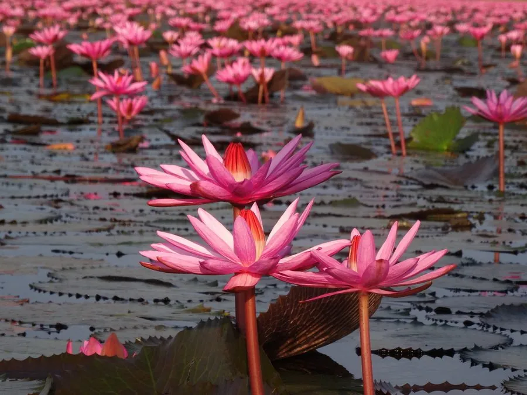

水生植物 · 植物界
红睡莲 Nymphaea rubra

睡莲科睡莲属多年生水生草本，花深红至紫红色，挺出或浮于水面，原产南亚，是热带与亚热带水景的常见品种。
- 分类
- 门被子植物门纲木兰纲目睡莲目科睡莲科属睡莲属
- 栖息环境
- 南亚的池塘、湖泊与缓流河湾，喜高温、阳光充足
- 地理分布
- 原产印度、孟加拉国；中国华南、西南及世界热带地区栽培
- 保护级别
- IUCN 暂无评估；栽培广泛，野生种群受湿地开垦影响
物种志
红睡莲为多年生水生草本，具粗壮根状茎。叶片浮水，近圆形，直径 20–40 厘米，基部深裂，幼叶带紫红色，成熟后上面深绿、下面紫红。花单生，深红色至紫红色，直径 15–20 厘米，花瓣多数，花蕊橙黄色，花可挺出水面；浆果海绵质，种子沉水。
本种原产印度、孟加拉国等南亚地区，生于池塘、湖泊与缓流河湾，喜高温、阳光充足的环境，在中国华南、西南常作水景栽培。它花色浓艳、花型大，是热带睡莲杂交的重要亲本，许多深红、紫红品种都有它的血统。红睡莲需保持 40–100 厘米水深，冬季在北方需移入温室。其根状茎可入药，叶片可作饲料。
形态与习性
- 花期6–10 月，花深红至紫红色
- 叶浮水，近圆形，下面紫红色
- 水深40–100 厘米的静水水体
- 光照强阳性，需充足直射光
- 水分生于静水，忌流动水体
- 土壤富含腐殖质的塘泥
- 主要用途水景观赏、睡莲杂交亲本与根茎入药
趣味知识
- 红睡莲原产南亚，是热带睡莲中花色最深的原生种之一。
- 它的花可以挺出水面，与许多浮在水面的睡莲不同。
- 红睡莲是许多深红、紫红睡莲品种的重要杂交亲本。
- 它的叶片下面呈紫红色，浮在水面时能反射更多阳光。